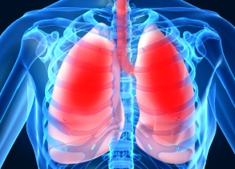

Aline Gobett
Henrique Bedaque
Iuri Diniz
Maria Clara Coutinho
Nina Amanda
Roberta Gadelha
Tassila Maia
Etanol
Ingestão de etanol é expressa em unidades:
Etanol
Homens: 21 unidades por semana
Mulheres: 14 unidades por semana
Etanol
Quanto maior a dose
Menos metabolização hepática de primeira passagem
Maior concentração sanguínea e seus efeitos!
Etanol - mecanismos de ação
Dose dependente
Interação com lipídios da membrana neuronal:
Metabolismo hepático
Ressaca
Hipoglicemia e desidratação
Terapia alcoolismo
Dissulfiram
Taquicardia, hiperventilação, pânico e angústia
Etanol - mecanismos de ação
Inibição do receptor GABAaérgico
Aumento da atividade de moduladores de neurotransmissores inibitórios
Etanol - mecanismos de ação
Interação com receptor NMDA (receptor glutamatérgico):
Inibição da entrada de cálcio
Etanol - mecanismos de ação
Metabolização de etanol a acetaldeído
Influência na liberação de neurotransmissores como dopamina, serotonina, noradrenalina e peptídeos opióides
Etanol - efeitos
Etanol - efeitos
Etanol - Tolerância
Administração repetida de uma droga leva a necessidade de uma maior dose (concentração) do etanol para produzir o mesmo efeito
Tolerância inata (sensibilidade inicial): varia entre os indivíduos e está relacionada com história familiar de alcoolismo
Tolerância adquirida: relacionada a experiência com o álcool. Ex: alcoólatras pode ter níveis sanguíneos extremamente alto (300 a 400 mg/dl) de etanol sem causar os efeitos
Etanol - Tolerância
Isso leva o individuo ingerir álcool pela manhã para repor os níveis reduzidos durante a noite
Etanol produz tolerância cruzada com outros aos outros sedativos, como benzodiazepinas. Essa tolerância é atuante nos estão em abstinência, mas, enquanto estão consumindo álcool, os efeitos sedativos do etanol soma-se a de outros sedativos, tornando essa combinação perigosa, o que pode levar a overdose
Etanol – ABSTINÊNCIA
A síndrome de abstinência do álcool geralmente depende do volume médio consumido diariamente e, em geral, é “tratada” quando o indivíduo volta a beber
Etanol – Intervenção
Nicotina
A nicotina é o componente ativo do tabaco, junto ao alcatrão e o CO
Usado terapeuticamente apenas para parar de fumar
Segundo fármaco mais usado (apenas perde para o etanol)
Atravessa a barreira hematoencefálica
Nicotina
Nicotina ativa os receptores nicotínicos de acetilcolina com localização central, periférica e na junção neuromuscular
Neurônios colinérgicos ativam receptores nicotínicos e muscarínicos de acetilcolina em neurônios dopaminérgicos na área tegmentar ventral → ativa a via de recompensa dopaminérgica encefálica
Nicotina
Efeitos sobre a via de recompensa mesolímbica
+
administração por via de inalação
+
meia vida curta da nicoticina
=
alto potencial de dependência dessa substância.
Nicotina - ações
Suspende o apetite
Doses baixas causam estimulação ganglionar por despolarização levando à
Nicotina - farmacocinética
Muito lipossolúvel → fácil absorção por mucosa oral, pulmonar, TGI e pele
Atravessa a placenta e é secretada no leite
Biotransformada no pulmão e fígado
Excreção urinária
Nicotina - efeitos adversos
A estimulação dos gânglios simpáticos e da suprarrenal leva ao aumento da pressão arterial e aumento da frequência cardíaca
A estimulação dos gânglios parassimpáticos aumenta a atividade motora do intestino levando a cólicas intestinais e diarreia
O bloqueio ganglionar (em doses elevadas) leva à queda da PA e à ausência de atividade dos músculos do TGI e da bexiga.
Nicotina - efeitos adversos
Dependência, levando à Síndrome da Abstinência
Irritabilidade
Tremores
Intensa compulsão e comportamento associado de busca da droga
Aumenta a velocidade de biotransformação de inúmeros fármacos
Obs: a Bupropiona pode reduzir a compulsão por fumar
Nicotina - efeitos a longo prazo
Doenças pulmonares e cardiovasculares
Cânceres (como o de pulmão) 